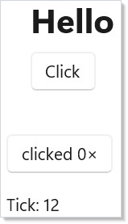

Cheat Sheet¶
Microsoft.UI.Reactor (Reactor) at a glance. Every row links to the page that covers it in depth.
Minimum viable app¶
class HelloVignette : Component
{
public override Element Render() =>
VStack(8,
Heading("Hello"),
Button("Click", () => { })
).Padding(20);
}

Three pieces: a using static Microsoft.UI.Reactor.Factories import,
a Component subclass, and a ReactorApp.Run<App>(title, ...) call.
Doc apps inherit Reactor.DevtoolsSupport=true from docs/_pipeline/apps/Directory.Build.props so mur can capture screenshots.
Hooks¶
| Hook | Returns | Use when |
|---|---|---|
UseState<T>(initial) |
(T, Action<T>) |
Local state that drives re-render. |
UseReducer<T>(initial) |
(T, Action<Func<T,T>>) |
Functional updates from prev. |
UseReducer<S,A>(reducer, initial) |
(S, Action<A>) |
Redux-style state. |
UseEffect(setup, deps?) |
void | Side effects after render; cleanup on re-run. |
UseMemo<T>(factory, deps) |
T |
Cache expensive computation across renders. |
UseCallback(fn, deps) |
stable delegate | Memoize a callback identity. |
UseRef<T>(initial) |
Ref<T> |
Mutable value that does not trigger re-render. |
UseContext<T>(ctx) |
T |
Read a context value. |
UsePersisted<T>(key, initial, scope) |
(T, Action<T>) |
Survive re-mount via LRU cache. |
UseColorScheme() |
ColorScheme |
Reactive app-global light/dark. Forced colors: UseHighContrast(). |
UseResource(fetcher, cache, deps, opts?) |
AsyncValue<T> |
async-resources. |
UseFocusTrap(isActive) |
FocusTrapHandle |
Trap Tab inside a sub-tree. |
UseAnnounce() |
AnnounceHandle |
Push a screen-reader announcement (via .Announce(string) method). |
UseElementRef<T>() |
ElementRef<T> |
Reference a realized element for focus, TeachingTip.Target, UIA relationships, or XYFocus. |
UseDevtools() |
bool |
Dev-tooling gate — true when devtools are enabled. |
class StateVignette : Component
{
public override Element Render()
{
var (count, setCount) = UseState(0);
return Button($"clicked {count}×", () => setCount(count + 1))
.AutomationName($"Increment counter; clicked {count} times");
}
}
class EffectVignette : Component
{
public override Element Render()
{
var (tick, incrementTick) = UseReducer(0, threadSafe: true);
UseEffect(() =>
{
var timer = new System.Timers.Timer(1000);
timer.Elapsed += (_, _) => incrementTick(t => t + 1);
timer.Start();
return () => timer.Dispose();
}, []);
return TextBlock($"Tick: {tick}");
}
}
Full coverage on Hooks.
Common factories¶
| Factory | Notes |
|---|---|
TextBlock(s) / Heading(s) / SubHeading(s) / Caption(s) |
Read-only text. |
Button(label, onClick) |
The click control. |
TextBox(value, set, placeholder?, header?) |
Single-line input. |
PasswordBox(pwd, set, placeholderText?) |
Obscured input. |
NumberBox(value, set, header?) |
Numeric input. |
CheckBox(checked, set, label?) |
Two-state checkbox. |
ToggleSwitch(on, set, header?) |
Two-state switch. |
Slider(value, min, max, set) |
Numeric range. |
ComboBox(items, index, set) |
Drop-down list. |
RadioButtons(items, index, set) |
Single-select radio group. |
VStack(spacing, ...children) / HStack(spacing, ...children) |
Linear stacks. |
Grid(cols, rows, ...children) |
Two-axis layout. |
ScrollView(child) |
Scroll container. |
Border(child) |
Border + corner radius wrapper. |
Expander(header, content) |
Collapsible section. |
ListView<T>(items, key, view) |
Bound list. |
VirtualList(count, render, ...) |
Index-driven virtual list. |
DataGrid<T>(source, columns, ...) |
Data-system grid. |
Win2DCanvas(...) / Win2DAnimatedCanvas(...) |
Optional Win2D canvas surfaces from Microsoft.UI.Reactor.Advanced (import using static Microsoft.UI.Reactor.Advanced.Factories;). |
Empty() / Group(...children) / ForEach(items, render) |
Tree helpers. |
Memo(ctx => ...) / RenderEachTime(ctx => ...) |
Function components. |
Component<TComp>() |
Mount a class-based Component. |
Full coverage on Controls.
Modifier chains¶
| Group | Methods |
|---|---|
| Size | .Width(n) .Height(n) .Size(w,h) |
| Spacing | .Margin(n) .Padding(n) .HAlign(...) .VAlign(...) .HorizontalContentAlignment(...) .VerticalContentAlignment(...) |
| Text | .FontSize(n) .Bold() .SemiBold() .Opacity(n) |
| Color | .Background(token) .Foreground(token) .BorderBrush(token) .BorderThickness(...) .WithBorder(token, thickness?) |
| Shape | .CornerRadius(n) |
| Behavior | .IsEnabled(bool) .IsVisible(bool) .IsHitTestVisible(bool) .ToolTip(s) .ToolTip(s, PlacementMode) .ToolTipPlacement(...) .ToolTipPlacementTarget(r) |
| Keying | .WithKey(s) |
| Flex | .Flex(grow?, shrink?, basis?) |
| Themed | .RequestedTheme(ElementTheme) .Backdrop(BackdropKind) |
| Transition | .OpacityTransition() .ScaleTransition() .TranslationTransition() |
| Compositor anim | .Animate(Curve, prop?) .Transition(t, c?) .InteractionStates(b, c?) |
| Layout anim | .LayoutAnimation() .SpringLayoutAnimation() .ConnectedAnimation(key) |
| References | .Ref(r) .Target(r) .LabeledBy(r) .DescribedBy(...) .XYFocusRight(r) |
| Escape hatch | .Set(ctrl => { /* raw WinUI */ }) |
Full coverage on Styling, Animation, Theming Tokens.
App entry + hosting¶
| API | Purpose |
|---|---|
ReactorApp.Run<TComp>(title, width?, height?, fullScreen?, configure?) |
Single-window app. |
ReactorApp.OpenWindow(spec, root) |
Additional window from a WindowSpec. |
ReactorHost / ReactorHostControl |
Embed Reactor in XAML / WinForms. |
NavigationHost(nav, routeMap) |
Multi-page navigation. |
DeepLinkMap<TRoute> |
URI-pattern routing. |
Command / Button(command) / .Command(cmd) |
Commanding. |
IDataSource<T> / DataGrid<T> |
Data system. |
ApplicationPersistedScope.Default |
Process-wide persistence cache. |
Themed colors¶
| Token | What it is |
|---|---|
Theme.Accent / Theme.AccentSecondary / Theme.AccentText |
Accent fill + text. |
Theme.PrimaryText / Theme.SecondaryText / Theme.DisabledText |
Text levels. |
Theme.CardBackground / Theme.SolidBackground / Theme.LayerFill |
Surfaces. |
Theme.ControlFill / Theme.ControlFillSecondary / Theme.ControlFillInputActive |
Control states. |
Theme.CardStroke / Theme.DividerStroke / Theme.ControlStroke |
Borders. |
Theme.SystemSuccess / Theme.SystemCaution / Theme.SystemCritical |
Signal. |
Theme.Ref("CustomKey") |
Escape hatch for an app-level key. |
Full token catalog on Theming Tokens.
Patterns at a glance¶
Controlled input. var (v, set) = UseState("") →
TextBox(v, set).
Effect with cleanup. Return a cleanup lambda from the effect lambda; Reactor calls it before the next run (when deps change) and on unmount.
Conditional render. cond ? Element1 : Empty() keeps the element
out of the tree when cond is false — see the
modal-dialog recipe.
List with stable keys. ForEach(items, x => Card(x).WithKey(x.Id))
so the reconciler can move rows rather than rebuild them.
Reference prop. var target = this.UseElementRef<FrameworkElement>() →
Button("Open", show).Ref(target) →
TeachingTip("Tip", target: target). Use reference props, not
target.Current, for relationships that must survive late mount or
unmount.
Memoized subtree. Wrap the expensive child in Memo(ctx => …);
the function-component cache holds it across parent re-renders.
Disable submit during async work. A single submitting bool
covers both the button's .IsEnabled(...) and the spinner label.
Rules¶
Five rules cover most analyzer findings (full list on Rules of Reactor):
- Hooks at the top of
Render, never in a loop or conditional. - Setters returned by hooks are stable; you can capture them in closures safely.
- Render functions are pure — side effects go in
UseEffect. - Lists need stable
.WithKey()for any element that can reorder. - Theme-aware modifiers (
.Background,.Foreground,.WithBorder) want aTheme.*token, not a hex literal.
Tips¶
Skim the cheat sheet, then jump. Each row is a one-liner; the deep-dive page is one click away. Don't try to learn Reactor from this page — learn it from getting-started and components, and use this card as the recall surface.
Bookmark the modifier table. Modifier chains are the easiest thing to forget mid-keystroke; the modifier table is the highest-traffic section of this page.
Copy from the recipes for shape, not from the cheat sheet. The recipes are the working compositions; the cheat sheet is the catalog.
Next Steps¶
- Getting Started — Hello world walkthrough.
- Hooks — Hook-by-hook deep dive.
- Controls — Full control catalog.
- Styling — Modifiers in detail.
- Rules of Reactor — The full rule list with analyzer codes.